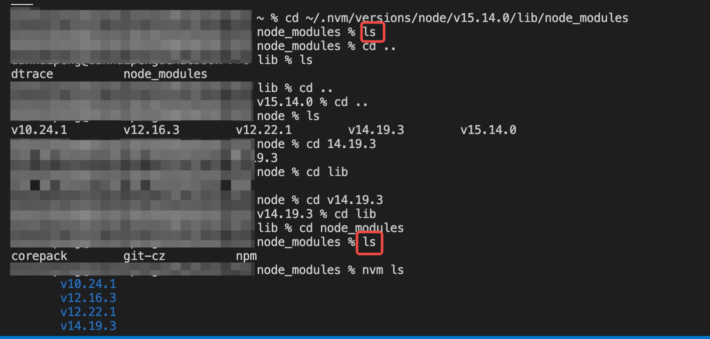

依赖失踪之谜 —— 记一次失败的问题查找
问题描述
全局安装的依赖包突然找不到了，调用指令返回 zsh: command not found:xxx 的报错。
问题分析
对于上述报错问题，网上的回复基本统一是缺少环境变量配置。MAC 电脑的环境变量文件加载顺序为：
- /etc/profile，系统级文件，系统启动即加载
- /etc/path，系统级文件，系统启动即加载
- /.bash_profile，用户级的环境变量配置文件，当该文件存在时忽略
/.bash_login 、/.profile 、~/.bashrc 文件的配置
解决环境变量问题步骤：
- 打开 zsh 控制台，输入指令：
open .zshrc - 查看环境变量 PATH。PATH 的通常写法为
1 | export PATH = <path 1> : <path 2> ... : <path n> : $PATH |
涉及多个环境变量时用分号隔开。
当前电脑配置的 zshrc 内容为：
1 | export NVM_DIR="/Users/danhuipeng/.nvm" |
虽然有 yarn 的路径在环境变量中，但因为全局依赖包没有使用 yarn，所以现在的设置并不能解决问题。推测可能是因为当前的 path 内容并没有指向全局 npm 的依赖包目录下 。
- 添加环境变量。使用指令
npm config get prefix获取全局安装包时使用的 node，使用指令npm root -g来寻找全局仓库路径。得到的结果分别为：
1 | ～/.nvm/versions/node/v15.14.0 |
根目录已省略。尝试将这两个变量添加到 path 后，执行指令发source .zshrc现并没有解决问题。为了明确为什么找不到依赖包执行了指令cd ~/.nvm/versions/node/v15.14.0/lib/node_modules到全局依赖目录下，尝试查看内容列表，然而执行指令ls后什么也没发生，即该目录下的内容已空！！为什么会空了呢？完全不知道原因，和其他版本的依赖目录比较发现连 npm 都没有了？？

问题排查到这里已经进行不下去了，只能进行依赖重装。
考虑到本人使用 node 15 的时候比较少，大多数项目使用的都是 14，所以采用指令nvm alias default v14调整 node 的默认版本。因为 node 15 现在连 npm 都没有了，所以使用nvm uninstall v15指令卸载 node15。使用指令nvm ls检查发现现在已经开始使用 node v14 了
1 | v10.24.1 |
参考文献
(1)Mac 在 bash 和 zsh 配置环境变量 path 的几种方法
(2)npm 全局安装后，对应的环境变量目录下找不到文件